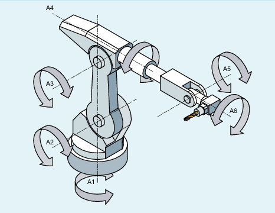

Um bei rotatorischen Achsen auch Achswinkel, die größer +180° oder kleiner -180° sind, ohne besondere Verfahrstrategie (z. B. Zwischenpunkte) anfahren zu können, müssen unter der einstellbaren Adresse TU die Vorzeichen der Achswinkel angegeben werden.
| Hinweis |
|
Die Steuerung berücksichtigt programmierte TU-Werte nur bei PTP-Bewegungen. Bei CP-Bewegungen werden sie ignoriert. |
Syntax
TU=<Wert>Bedeutung
| Einstellbare Adresse zur Angabe der Achswinkelvorzeichen | |||
| Binär- oder Dezimalwert Für jede Achse, die in die Transformation eingeht, gibt es ein Bit, das das Vorzeichen des Achswinkels (θ) und damit die Verfahrrichtung anzeigt. | |||
Bit | = 0 | Achswinkelvorzeichen: + | Achswinkelbereich: 0° ≤ θ < 360° | |
= 1 | Achswinkelvorzeichen: - | Achswinkelbereich: - 360° < θ < 0° | ||
Beispiel: 6-achsiger Knickarmroboter
Bit | Bedeutung | Wert | Achswinkelvorzeichen | Achswinkel |
|---|---|---|---|---|
Bit 0 1) | Vorzeichen für den Achswinkel von A1 | = 0 | + | ≥ 0° |
= 1 | - | < 0° | ||
Bit 1 1) | Vorzeichen für den Achswinkel von A2 | = 0 | + | ≥ 0° |
= 1 | - | < 0° | ||
Bit 2 1) | Vorzeichen für den Achswinkel von A3 | = 0 | + | ≥ 0° |
= 1 | - | < 0° | ||
Bit 3 1) | Vorzeichen für den Achswinkel von A4 | = 0 | + | ≥ 0° |
= 1 | - | < 0° | ||
Bit 4 1) | Vorzeichen für den Achswinkel von A5 | = 0 | + | ≥ 0° |
= 1 | - | < 0° | ||
Bit 5 1) | Vorzeichen für den Achswinkel von A6 | = 0 | + | ≥ 0° |
= 1 | - | < 0° |
TU=19 (entspricht TU='B010011) würde also bedeuten:
Bit | Wert | Achswinkel | |
0 | = 1 | ⇒ | θA1 < 0° |
1 | = 1 | ⇒ | θA2 < 0° |
2 | = 0 | ⇒ | θA3 ≥ 0° |
3 | = 0 | ⇒ | θA4 ≥ 0° |
4 | = 1 | ⇒ | θA5 < 0° |
5 | = 0 | ⇒ | θA6 ≥ 0° |
| Hinweis |
Bei Achsen mit einem Verfahrbereich > ±360° wird immer auf kürzestem Weg verfahren, da die Achsstellung durch die TU-Information nicht eindeutig bestimmbar ist. Wird bei einer Position kein TU programmiert, wird in Abhängigkeit von MD30455 $MA_MISC_FUNCTION_MASK der kürzere oder längere Weg verfahren. |
TRANSMIT_K (konventionell TRANSMIT)
Beim PTP-Fahren bei aktivem TRANSMIT ist die Adresse TU ohne Bedeutung!
Beispiel
Die in der folgenden Abbildung angegebene Rundachsposition kann in negativer oder in positiver Richtung angefahren werden. Unter der Adresse A1 wird die Winkelposition programmiert. Erst durch die TU-Angabe wird die Verfahrrichtung eindeutig.